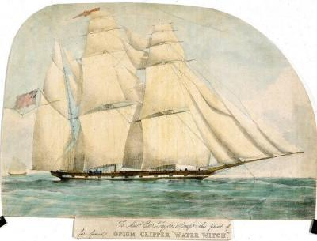
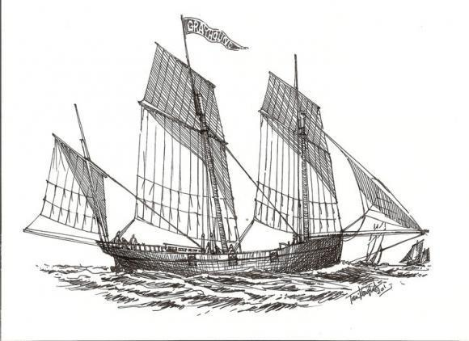
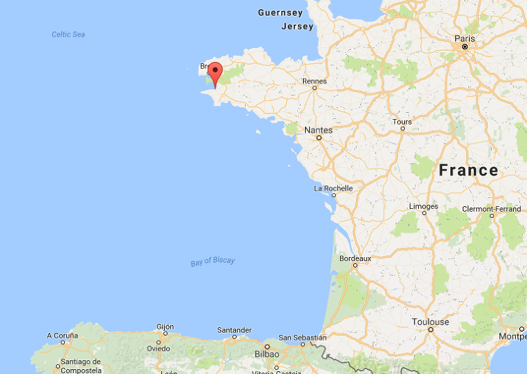
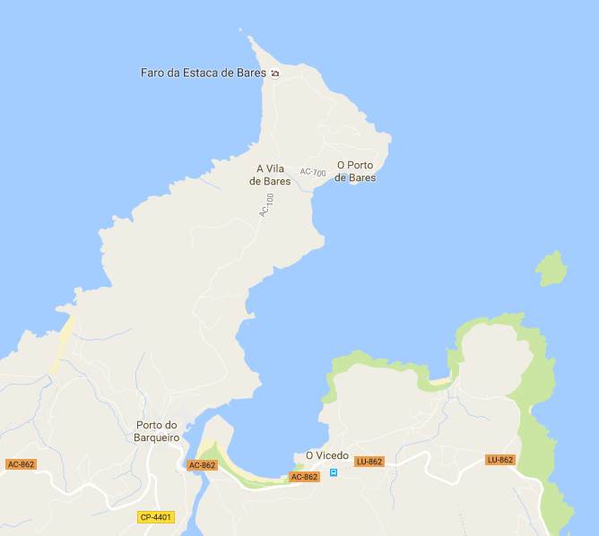
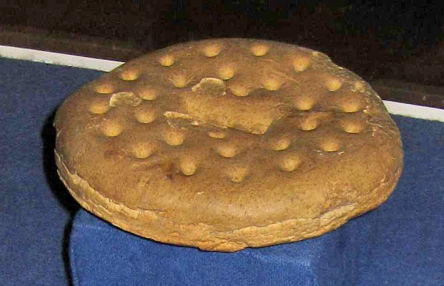
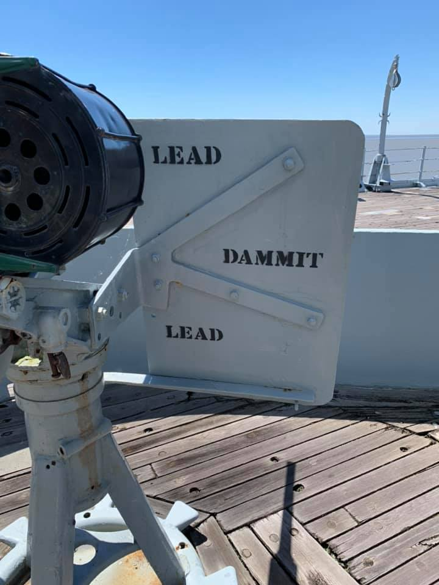

도주의 멋과 희열 - The Commodore 중 한 장면
게시: 2020-07-09T06:30:53+09:00
전에 회사 사람들과 영화 이야기를 하다, 이런 이야기가 나왔습니다. 남자들이 좋아하는 영화는 무조건 싸우는 것이 주된 내용이라는 것이지요. 그게 검이건 자동화기건 광선총이든이요. (여자들이 좋아하는 영화는 잘 생기고 능력있는 남자들이 여자 하나를 놓고 싸우는 내용이라는 설도 있긴 했습니다...) 제가 재미있게 본 영화들이 다 무식하게 쌈박질만 하는 영화는 아니었지만, 그래도 생각해보면 딱히 틀린 말은 아닙니다. 남자들은 짐승 수준에서 크게 발달한 존재들이 아니다 보니, 제일 좋아하는 내용이 피튀기며 싸우는 내용이긴 합니다. (태권도 vs. 유도, 야구배트 vs. 재크 나이프, F-15 vs. 라팔, 메이웨더 vs. 파퀴아오, 로마 군단 vs. 몽골 기병, 사자 vs. 호랑이...) 하지만 그렇게 싸우는 것은 힘센 놈들이나 할 수 있는 것입니다. 저처럼 힘으로나 사회적 지위로나 약한 사람은 힘센 놈을 만나면 도망쳐야 합니다. 사실 호신술 중에서 가장 효과적이고 법률적으로도 완벽한 것은 바로 달려서 도망치는 것입니다. 이렇게 바람직한 호신술을 두고 복싱을 배우네 검도를 배우네 하는 이유는, 도망치는 것은 왠지 비겁하고 폼도 안 나는 것처럼 보이기 때문입니다. 그렇지 않습니다 ! 가령 사자를 본 영양이 힘차게 달려서 도망가는 것은 결코 비겁한 것도 아니고, 또 그렇게 사자보다 빨리 달리는 모습 자체는 아름답기까지 합니다. 영양을 잡지 못하는 사자는 굶어 죽게 되니까, 궁극적으로는 사자에게 이기는 것이지요. 도망치는 것에도 남성적인 멋과 환희가 넘친다는 것을 보여주는 장면이 오브리-머투어린 시리즈 중에 나옵니다. 그 부분만 발췌 번역해 봤습니다.

The Commodore by Patrick O'Brian (배경 : 1812년 스페인 해안 인근의 비무장 영국 소형 선박 링글 Ringle 호) ----- (아일랜드 출신의 군의관인 스티븐 머투어린은 영국 해군성 정보부을 위해 일하는 비밀 스파이이기도 합니다. 그는 프랑스를 위해 일하는 영국 정부 내의 간첩망을 소탕하는데 큰 기여를 하지만, 그로 인해 고위 귀족인 정적의 박해를 받습니다. 그 결과로 자신과 식솔들이 체포될 위기에 처하자 그는 재빨리 자신의 전재산인 엄청난 양의 금화 궤짝들과 어린 딸, 그리고 식솔인 클라리스 옥스 부인과 선원 파딘을 모두 데리고 친구 잭 오브리 함장이 마련해준 작은 클리퍼(clipper) 선인 링글 호에 올라타고 스페인으로 야반 도주를 합니다. 순조로운 항해 끝에 이제 그들은 스페인 영해에 들어옵니다.)

(흔히 클리퍼라고 하면 19세기 후반의 대형 tea clipper를 연상하기 쉽지만, 여기서는 그냥 선폭이 좁은 작은 쾌속선입니다.)
그들은 농지에 대해, 그리고 농사를 지어 작물들이 자라는 것을 보는 즐거움과 수확 및 탈곡 등에 대해 잡담을 했다. 실은 주로 파딘이 혼자 떠들었는데, 스티븐은 그가 이렇게 또렷하게 청산유수로 말을 쏟아내는 것을 들어본 적이 없었다. 그러는 사이 동이 텄는데, 첫 새벽 놀 속에서 구름이 걷히면서 굉장히 갑작스럽게 환해졌다. "비상, 비상 ! (All hands, all hands!)" 바로 뒤 쪽인 고물에서 본덴이 소리를 질렀다. 본덴과 다른 선원들이 햇치를 두드리며 뛰어다니기 시작했다. "비상, 모두 갑판으로 집합 ! (All hands on deck !)" 쉽게 깜짝 놀라는 편인 파딘은 그가 들고 있던 낚싯대에 스티븐이 발이 걸려 비틀거리게 하며 그가 잡았던 물고기 통을 엎어버렸다. 그들이 그걸 치우는 사이 리드가 잠옷 차림으로 갑판에 올라와 명령을 내리기 시작했다. (이 작은 쾌속선의 함장 Reade는 아직 소년티를 벗지 못한 매우 쾌활한 사관후보생 midshipman 입니다. 그는 팔 하나가 없는데, 이는 전에 잭 오브리 및 스티븐 머투어린과 함께 태평양 항해에 나섰다가 말레이 해적들과의 전투에서 잃은 것입니다. 그때 팔 절단 수술을 스티븐이 맡았었습니다.) 바레스(Vares) 곶에 의해 갖힌 만 안쪽, 링글 호 뒤 약 반 마일 지점에 3개의 돛대를 가진 러거(lugger) 선이 있었는데, 그 배는 길고, 현수가 낮으며, 검은 색으로 칠해져 있었다. 한 눈에 보기에도 중무장 상태였고, 선원 수가 매우 많았다. 이미 그 배는 돛을 더 올리고 있었다.

(러거 lugger 선의 형태입니다.) 파딘은 즉시 원래 자신의 위치인 앞 돛 쪽으로 뛰어갔다. 스티븐은 후갑판 우현에 자리를 잡았는데, 그 곳이 그나마 그가 주변 선원들에게 가장 덜 걸리적거리는 자리였기 때문이었다. 리드가 선원들과 재빨리 주고 받는 말이 들려왔는데, 주로 리드가 고참 선원들의 의견을 묻고 그에 대한 대답을 듣는 것이었다. 선원들이 일을 하거나 옆에 서서 하는 말들을 스티븐도 들을 수 있었는데, 모든 선원들의 의견은 일치했다. 저 러거 선은 두아른네(Douarnenez) 항에서 나온 마리-폴 (Marie-Paule) 호라는 프랑스 배로서, 속도가 매우 빠른 것으로 유명했다. 빠르기로 유명한 세관 소속 커터 선(the Revenue cutter)들도 한 번도 저 배를 잡지 못 했다는 것이었다. 저 배는 가끔씩 사략선(privateer)로 활약했는데, 지금은 갑판에 선원들이 가득 찬 것으로 보아 사략선으로 바다에 나온 것이 틀림 없었다.

(두아른네의 위치입니다. 브레타뉴에 있습니다.) 저들은 브릭섬(Brixham)에서 나온 트롤 어선 같은 것은 그냥 놓아줄지 몰라도, 기독교 선박이든 투르크 선박이든 유대인 선박이든 어떤 배도 그냥 지나치지 않았다. 그리고 그 선장인 프랑수아는 아주 유능한 개자식이어서, 저 사략선 선원들은 이물에 장착된 9파운드 포를 아주 대단한 솜씨로 다루었다. 링글 호의 선원들은 모두 심각하게 이야기했고 표정들이 어두웠다. 그는 리드의 얼굴 표정을 볼 수가 없었다. 그는 본덴과 함께 조타륜 쪽에 있었는데, 등을 돌리고 있었던 것이다. 본덴의 얼굴은 보였는데, 침착하고 단호한 표정이었다. 전후방을 살피며 스티븐은 링글 호의 위치를 파악해보았다. 매순간 날이 점점 밝아지는 동안, 돛을 당기고 뒤로 잡아맨 결과 클리퍼 선은 바람을 받아 점점 더 옆으로 기울어졌다. 스티븐이 그동안 쌓은 바닷일 경험에 따르면, 탈출구가 없었다. 1마일도 안 되는 전방에는 바레스 곶이 바다 쪽으로 북쪽을 향해 뻗어 있었다. 이렇게 우현으로 바람을 받고 있는 상황에서는 배의 항로가 저 곶의 끝 부분에 걸릴 수 밖에 없었다. 그들은 반드시 선회하여 공간을 좀더 확보해야 했는데, 그러는 사이 저 큰 러거 선이 링글 호를 따라잡아 공격조가 올라탈 것임에 틀림 없었다. 그 러거 선은 몹시 빠르게 접근하고 있었고, 갑판 위에는 선원들이 득실거리고 있었다.

(스페인 북쪽 해안 코루냐 항 근처에 있는 실제 Vares 혹은 Bares 곶의 형상입니다. 구글에서 Vares를 뒤져보니 Bares라고 나오네요.) 그는 추격자로서든 추격받는 입장으로서든 꽤 많은 해상 추격전을 경험했는데, 모두 긴 기간에 걸친 것이었고 어떤 것은 며칠 동안 지속되기도 했었다. 그때 겪은 지속적인 긴장감은 팽팽했지만 긴 기간에 걸친 것이다보니 견딜만 한 것이었다. 하지만 지금은 며칠이나 몇 시간은 커녕 몇 분 안에 결판이 날 상황이었다. 이 클리퍼 선은 바람 반대 방향의 뱃전이 하얀 물거품에 거의 잠길 정도로 기울어 돛이란 돛은 다 달고 있었는데, 이미 10 노트(약 시속 18km : 역주)의 속력을 내고 있었다. 4분 안에 저 곶을 들이받거나 선회하여 저 러거 선을 우현으로 받아야 할 판국이었다. 그 4분의 시간이 흐르는 동안, 그는 선창에 보관된 그의 재산, 즉 금화 궤짝들이 그에게, 또 그의 어린 딸과 그의 삶의 수많은 측면에 있어 얼마나 중요한 것인지 너무나 또렷하게 실감하고 있었다. 그는 그 돈이 그에게 그렇게 큰 가치가 있다고는 생각해 본 적이 없었고, 사실은 그가 그 재산을 얼마나 소중히 생각하고 있었는지 몰랐던 것이다. 갈매기들이 바레스 곶과 링글 호 사이를 무심히 떠다녔고, 그 해안에 파도가 하얗게 부서지는 것이 보였다. 그는 핼쑥한 얼굴로 조타륜에 모여있는 선원들을 돌아 보았는데, 마치 그의 시선을 느끼기라도 했는지 리드가 그와 시선을 맞추었다. 그 어린 사관후보생의 표정은 마치 잭 오브리 함장이 위기의 순간에 가끔 보여주던 약간 광기어린 기쁨 같은 것이었다. 리드는 외쳤다. "기다리세요, 의사 선생님, 보시라구요." 그리고는 선원인 슬레이드에게 뭔가 건빵(biscuit)에 관련된 말을 덧붙였다. 그와 본덴은 둘다 손을 세번 감은 밧줄과 조타륜을 쥐고 있었는데, 그들의 눈은 앞돛의 가장자리에 고정되어 있었고, 타륜을 바람 불어가는 쪽으로 느슨하게 풀더니, 조금 더 느슨하게 풀었다. 스티븐은 이제 바로 코 앞까지 다가온 곶의 그 무시무시한 해변이 좌현으로 쏜살같이 스쳐가는 것을 보았다. 그는 곶의 바다쪽 끝부분이 시야에 들어오는 것을 보았는데, 링글 호의 좌현 이물 쪽은 그 부분과 간신히 부딪히 않을 정도, 아마 10 야드 (약 9m : 역주) 정도로 떨어져 있었다. 그는 어린 리드가 외치는 소리를 들었다. "그거 던져 !" 슬레이드는 쥐고 있던 건빵을 힘차게 던졌고, 바위를 맞췄다. 그것을 본 선원들이 웃음을 터뜨리는 순간 링글 호는 곶을 아슬아슬하게 비켜 탁 트인 바다로 빠져 나왔다.

(덴마크 해양 박물관에 있는 1850년대의 항해용 건빵입니다. 당시 건빵 biscuit은 우리가 군대에서 먹던 일본식 건빵과는 달리 매우 크고 단단하고 묵직했습니다.) 추격해 오던 러거 선에서는 별로 효과가 없는 대포 한 방을 쏘고는 방향을 돌렸다. 그 곶을 비켜 빠져 나올 수가 없었던 것이다. 덕분에 간격과 관성의 힘을 잃었고, 또한 다잡을 뻔 했던 링글 호까지 잃은 셈이었다. 추격전은 몇 시간 더 계속 되었지만 정오 무렵이 되자 러거 선은 훨씬 더 뒤떨어져 동쪽 수평선 상에 돛 끝 부분만 살짝 보일 정도로 멀어졌다. 링글 호는 아주 기분 좋은 상태로 항진을 계속 했다. 갑판에서는 가끔씩 웃음보가 터져 나왔고 선원들이 서로 '바레스 곶을 건빵을 던져서 닿을 간격으로 (within biscuit-toss) 통과했어, 하하하'라며 이야기했다. 어떤 선원들은 그들이 거둔 승리의 의미를 옥스 부인과 스티븐의 딸인 브리짓에게 설명하려고 해보았으나, 링글 호가 코루냐 항구에 들어갈 때까지도 이 여자들은 아까 그것이 억세게 운이 좋은 상황이었고 선원들이 매우 기뻐한다는 것 외에는 전체 상황을 다 이해하지는 못 했다. (역주 : 저 within biscuit-toss라는 표현은 within a stone's throw 돌 던지면 맞을 거리에서, within ear-shot 귀로 들리는 거리에서, 또는 within pistol-shot 권총 사정 거리 내에서 등의 표현에서 파생된 것입니다. 우리 한국인들은 우리 말과 글에 대해 자부심이 대단하지만, 영어도 간결하고 멋진 표현들이 많습니다. 색깔만 해도 그렇습니다. 우린 같은 노란색이나 붉은색에도 표현이 매우 많다면서 자랑하지만, 영어도 알고 보면 표현이 매우 많습니다. 가령 오브리-머투어린 시리즈 제목 중 하나인 "Wine dark sea"라는 표현을 보십시요.)

(영어의 간결함을 보여주는 대표적 사례 중 하나입니다. 미해군 사우스 다코다급 전함 USS Alabama (BB60)의 고사포 포방패 후면에 적힌 문구인데, 굳이 번역하자면 "(적기에 직접 조준해서 쏘지 말고 적기의 속도를 고려해서) 좀 앞 쪽을 쏴, C발, 앞쪽을 쏘라고")